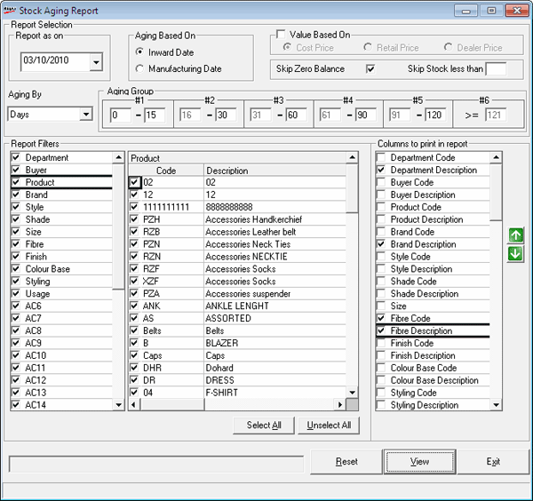

The Stock Aging report gives information on items in stock for different aging periods. Aging period may be chosen based on inward date or manufacturing date. You can decide whether the stock value in the report shows cost price, retail price or dealer price.
How to reach: Reports > Stock > Aging
The Stock Aging Report window is as shown.

Report Selection:
Report as on: The date selected in the common report selection window is displayed here.
Aging Based On: Select Inward Date or Manufacturing Date to specify the basis on which stock aging has to be computed.
Value Based On: Select to enable report generation based on Cost Price, Retail Price or Dealer Price. If you select this, Cost Price, Retail Price and Dealer Price are enabled with Cost Price as the default. Select the price of your choice, for display in the report.
Skip Zero Balance: Selected by default. On selecting this option, the report generated will not display any stock item with a zero balance as of the date on which the report is generated. Unselect to include zero balance stock items also in the report.
Skip Stock less than: Enter a cut-off figure, if you want to avoid including items with lesser stock than specified as of the date on which the report is generated.
Aging By: Select Days, Weeks, Fortnights, Months or Quarters to specify the duration of age computation.
Aging Group: You can segregate the items into various age groups based on age. Specify the lower and upper limits in group 1, in units selected in Aging By. You may enter upper limits in groups 2 to 5. Group 6 will include all durations above the upper limit of group 5. If the upper limit for any of the groups is left empty, that group will be treated as the last one.
Report Filters: The item classifications are listed. Click each classification to view the corresponding values in the next column. By default all values are selected.
Select All: To select all values in the selected item classification.
Unselect All: To unselect all values in the selected item classification.
Columns to print in
report: Select the columns to be included for printing. Use  and
and  to change the position of columns in
the report. The order of the columns listed with a grey background cannot
be changed. However, you may avoid displaying any of these columns. Computations
in the report are based on these columns.
to change the position of columns in
the report. The order of the columns listed with a grey background cannot
be changed. However, you may avoid displaying any of these columns. Computations
in the report are based on these columns.